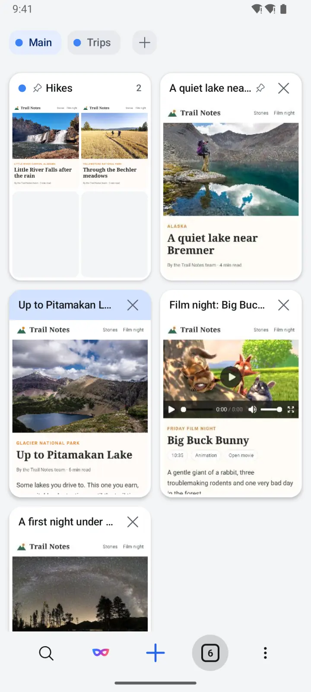
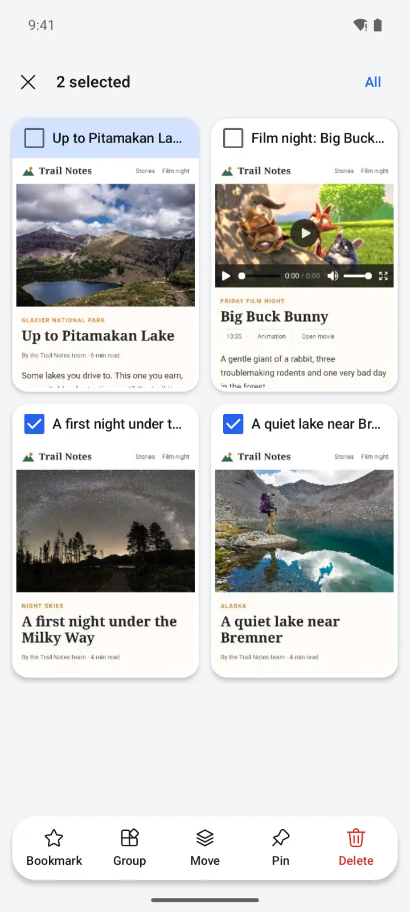
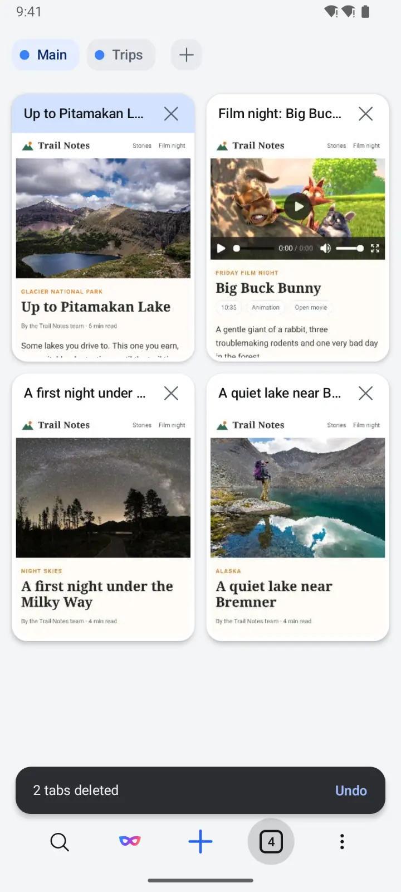

Pin, rename or pick several tabs
How-to
On the Tabs screen, press and hold a tab to do more with it: pin it, rename it, or select several tabs and act on them together.
Hold a tab
On the Tabs screen, hold a tab's card (or its row in the list view). Its menu opens:
- Add to bookmarks bookmarks its page.
- Pin tab puts it first on the Tabs screen with a pin mark. Close all tabs (not private) and Close other tabs leave pinned tabs alone, and its page stays loaded when you go to another app (see pages that stay loaded). Unpin tab undoes it.
- Rename opens Rename tab, where you give the tab a name of its own. The name shows on the Tabs screen only, and Search your tabs finds it.
- Lock tab hides it behind your fingerprint, face or PIN. See locks.
- Add to group puts it in a group. See tab groups.
- Move to private tab reopens its page in a private tab. See private tabs.
- Move to space moves it to another space. See spaces.
- Select tabs starts picking several tabs (below).
- Close other tabs closes the other tabs of the same kind in the same space, apart from pinned tabs, tabs in pinned groups and inactive tabs, with Undo. An older copy of a page it closes goes too, under the same Undo.


Pick several tabs
- Hold a tab and tap Select tabs.
- Tap more tabs to pick them. Each gets a check mark, and the top bar counts them ("2 selected"). All picks every tab shown, and the X stops picking.
- Use the bar at the bottom:
- Delete closes the picked tabs. A bar says how many were deleted, with Undo.
- Bookmark bookmarks their pages.
- Group adds them to a group, or a new one.
- Move moves the picked regular tabs to another space.
- Pin pins them, or Unpin when they're all pinned already.


More in Browsing
- Search, keep a few tabs open, and find your way home
- Search or go to an address
- Copy, paste or share a page's address
- Scan a QR code
- Change your search engine, and search one site directly
- Open, find and close tabs
- Group your tabs
- Use the start page
- Find words on a page
- Translate a page
- Read an article without the clutter
- Desktop site, zoom, print and save as PDF
- Hold a link, picture or video for more
- When a page asks you something
- Find a page in your history, or clear it
- Bookmarks, folders, import and export
- Links from other apps, and link previews
- The widget and home-screen shortcuts
- Sign in with your password manager